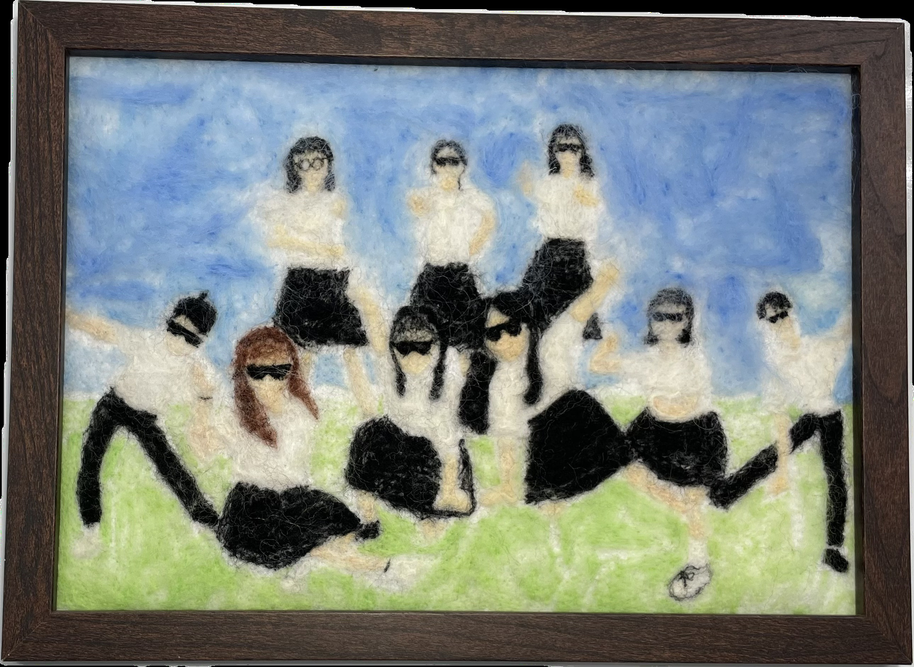

作品名稱：是青春？是我們
作者姓名：張芸芸
作品主題：校園最美的角落，必然是這群一起發瘋的人。
作品敘述：拍畢業照那天，天空湛藍，陽光燦爛，風景襯托下的我們都很好看。但眾多照片中最突出的，還是戴上墨鏡、姿勢搞怪的這張合體照。既然要選擇校園最美的角落，那就選擇一起拍出這張照片熱血高中生吧！
On the day we took our graduation photos, the sky was blue and the sun was shining brightly, and we all looked very good against the backdrop of the scenery. But the most striking one among all the photos is this group photo in which they are wearing sunglasses and posing in funny ways. Since you are choosing the most beautiful corner of the campus, let’s choose to take this photo together with passionate high school students!